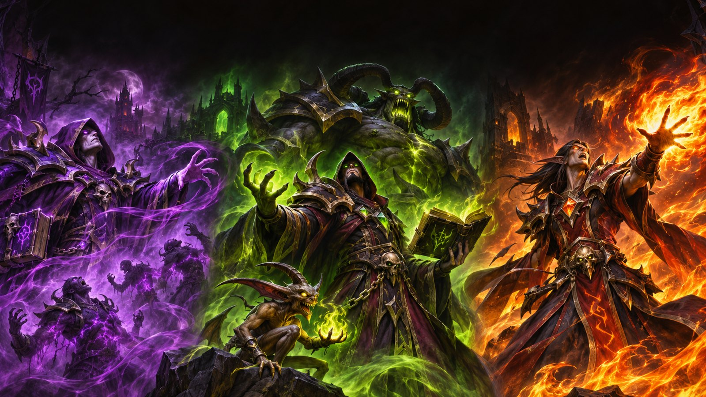

The Grimoire of Bound Souls / On Pact and Sacrifice
THE FOREVERWARLOCKCOMPENDIUM
The Grimoire of Ash and Bound Souls

Every bargain has a cost. Master curses, creeping damage, demon contracts and the dangerous exchange between Health and Mana before deciding which price you are willing to pay.
A VISUAL FIELD GUIDE · NO RETAIL/ERA MECHANICS IMPORTED
01 · The anatomy of a soulbinder
A Warlock has more than one resource bar
A Warlock wins by understanding what can be spent without leaving the fight unfinished: time for a curse to work, Mana for the next cast, Health for a refill and the trustworthiness of a bound demon.
Before opening the forbidden pages
Begin with Health, Mana, Soul Shards, pets and the distinction between a Bane and a Curse. Affliction, Demonology and Destruction each manipulate those constraints; their complete character ledgers are reserved for a later chapter.
I · THE SHADOW
Affliction
∞
Maintain effects while making channel and target selection decisions. Wrack accelerates three named DoTs; drain hybrids trade raw pressure for renewal.
CORE DECISIONWhat deserves uptime?
II · THE FEL
Demonology
2
Choose a sacrificed demon and an active demon to create a school or defense pairing. Shadow and Fire builds demand different fillers and pet commands.
CORE DECISIONWho carries the power?
III · THE EMBER
Destruction
20s
Maintain Conflagrate and Shadowburn's two 20-second school effects, then fire Incinerate into an Immolated target.
CORE DECISIONWhen should I cast?
The resource engine: four linked economies
Healthabsorbs danger
⟶
Life TapSpirit-sensitive
⟶
Manafunds casting
⟶
DoTs + nukespressure targets
⟶
Drain Liferestores health
Drain Soultick chance rises; kill guarantees
⟶
Soul Shardsnon-stacking reagents
⟶
Demons / stonessummons, Healthstone, Soulstone
⟶
Pet combatdamage, threat, utility
⟶
Control / safetyor sacrifice bonus
Soul Fire / Shadowburnspend shard normally
⟶
DecimationSoul Fire costs zero below 35% when triggered
/
Shadow and Flame 5/5Shadowburn instantly refunds shard
Life Tap scales with Spirit; Improved Life Tap max rank improves mana gain by 20%. Drain Soul has an increasing per-tick chance until guaranteed; a valid kill during the channel awards a shard. Shards occupy slots and Soul bags use the reagent-bag slot. [S11][S12]
The demon fieldbook
Demon
Its normal work
Spell / position
When it changes your build
Demonic Sacrifice – Forever
Master Demonologist 5/5
Imp
Ranged Fire, Blood Pact and Fire Shield
Firebolt; stands off the boss; can drain its mana
Improved Imp and Demonic Energies create a genuine ranged DPS engine
+15% Shadow damage
+10% Fire damage
Voidwalker
Tank and emergency shield
Torment, Suffering, Sacrifice shield, Consume Shadows; melee front
Improved Voidwalker, Soul Link, Brand threat and Health Funnel change solo survival
2% total mana every 4 sec
10% less physical damage taken
Succubus / Incubus (Sayaad)
Melee damage, Seduction, Lesser Invisibility
Lash of Pain and autoattacks; faces melee hazards
Improved Sayaad and Shadow builds; Seduction as a tactical PvP answer
+15% Fire damage
+10% Shadow damage
Felhunter
Interrupt, dispel, anti-caster
Spell Lock, Devour Magic, Paranoia; melee
Improved Felhunter reduces Spell Lock cooldown up to 6 sec; counterpick in PvP
3% total health every 4 sec
10% less magic damage taken
Infernal / Doomguard
Special temporary / ritual summons
Inferno meteor/stun; Doomguard via Ritual of Doom at 60
Separate encounter tools, not the four ordinary interchangeable Pact raid pets
Not one of the four listed sacrifice effects
No standard pairing assumed
Sacrifice effects, duration and Master Demonologist bonuses are Forever-specific; pet scaling and boss-AoE mitigation are documented for Forever. The game permits a pet Move To command; use it instead of assuming a stationary pet can safely stay inside hazards. [S01][S07][S11][S12]
DAMAGE SLOTS
Banes are not utility Curses
You may keep one Bane and one utility Curse of your own on the same target. Agony ramps across 24 sec; Doom requires a long-lived target for its 60-second strike; Bane of Havoc moves 15% of your damage to its afflicted target and therefore replaces Agony/Doom on that target. Curse of Elements helps magic damage; Tongues inhibits casters, Recklessness changes physical-defense/fear interactions. [S01][S08]
Target ACurse of Elements + Bane of Agony
≠
Target BCurse of Elements + Bane of Havoc
TRAVEL & SURVIVAL
The real cost of a demon
Imp is the standard summon without a Soul Shard; Voidwalker, Sayaad, and Felhunter each need one. Create Healthstone/Soulstone, Ritual of Summoning, Soul Fire and Shadowburn consume shards; Firestone/Spellstone creation also uses one. Keep room and spare shards for replacements. Fear can pull another pack; Banish neutralizes demons/elementals; Death Coil, Howl of Terror, healthstones and Shadow Ward protect you at critical moments. [S11][S12]
A pet command is a combat action
Pet Attackstart its real damage cycle
⟶
Focus targetespecially Demonic Brand
⟶
Move To / Followremove pet from bad ground
⟶
Manual Spell Lockhold for key caster ability
⟶
Health Funnelpet still alive = Soul Link active
Boss area-of-effect damage to demons is reduced by 50% in Forever reports; this is not blanket immunity to targeted pet damage, trash danger, positional failure or PvP focus. Soul Link only functions with a living active demon. [S05][S07][S11]
02 · The violet affliction laboratory
☾
Affliction: The Long Bargain
Affliction turns time into pressure. An effect that damages slowly has value only if the target lives long enough to feel it, and survival may depend on a drain or a demon rather than another immediate attack.
AFFLICTION · TIME
The value of lasting damage
Affliction works over time. The first judgment is whether the target will live long enough for a damage-over-time effect to do meaningful work and whether another refresh is worth its Mana.
AFFLICTION · SUSTAIN
Survival through the bargain
Drain effects and demon protection can let a Warlock stay in danger longer. Understand which resource pays for that endurance and what happens when the demon is no longer available.
AFFLICTION · CASTING
When a direct cast is worth it
Not every fight lasts long enough for every periodic effect. Direct Shadow spells can fill the safer windows while a Warlock still watches threat and the cost of standing still.
Diagram: Wrack changes tick timing, not spell expiration
A schematic example: assume a periodic effect would tick every 3 seconds. A one-second Wrack channel advances the DoT's next tick by two seconds of progress rather than one. The effect retains its original end time. This is timing logic, not a claim about a specific rank's actual tick interval. [S02]
Corruption · 18s*
◇ ticks advance faster only while channeling
Bane of Agony · 24s
◇ late-stage Agony remains; does not expire early
Siphon Life · 30s
◇ health returns periodically
Wrack · 6s channel
During Wrack: +100% tick rate
* Lane lengths are illustrative, deliberately not a synchronized spell simulator. Wrack accelerates only Corruption, Siphon Life and Bane of Agony, not Doom, Immolate or arbitrary Curses. Soul Siphon also counts only the named three. [S02]
Corruptioninstant at Improved Corruption 5/5
+
Siphon Lifeself-healing DoT
+
Agonyramping Shadow Bane
⟶
Soul Siphonup to +36% Wrack/drain
⟶
Wrackaccelerates three DoT clocks
Why Pandemic matters. Forever periodic effects can critically strike. Pandemic at 3/3 increases the critical-damage bonus of Corruption, Bane of Agony, Bane of Doom, Drain Life, Drain Soul, Siphon Life and Wrack; it is not a modern Retail “DoT duration rollover” mechanic. Shadow Mastery adds up to 10% to Shadow damage and healing from Shadow drain; Improved Corruption 5/5 makes Corruption instant and increases its damage 10%. [S01][S09]
A stationary boss: where the time goes
A1 / Wrack (6-second channel)
Sustained damage and periodic effects
Assigned Curse + amplified Agony
Corruption + Siphon Life
Wrack channel
Nightfall Bolt if proc
Refresh on expiration / Life Tap
None · Imp → +15% Shadow
A2 / Drain Life (defensive) / Wrack unavailable
The drain-and-survive choice
Soul Link + assign pet position
Curse, Corruption, Agony, Siphon
Drain Life only when healing is valuable
Shadow Trance Bolt; tap intelligently
Replace/recall endangered demon
Voidwalker / Felhunter · None while fighting
A3 / Shadow Bolt (Bane + Ruin)
When direct Shadow casts matter
Curse + long-duration Bane
Corruption
Shadow Bolt series
Nightfall instant Bolt on proc
Refresh DoTs; adjust pet
Sayaad / Felhunter · No
Affliction under pressure from several enemies
DoT spreading is not automatically the highest-value action. A target that dies in five seconds is a poor host for a long Agony ramp, and an avoidable target pulling through Fear can wipe a group. Choosing which monster gets a full set of effects is part of the build identity.
Maintaining effects under crowd pressure
Spreads Corruption and Agony to A/B/C if they last, uses Siphon Life where healing helps, channels Wrack on a valuable survivor, and Drain Souls the first kill for replacement shards. No pet damage or pet threat to manage.
Managing Health and enemy attention
Voidwalker grabs A; Fear/Banish removes dangerous D when valid; Corruption rolls on durable A/B; Drain Life stabilizes health while Soul Link shifts damage. Uses a slower but safer kill profile.
Choosing a cast while enemies move
Sayaad is assigned to priority A; maintains Corruption/Agony on durable B, then hardcasts Shadow Bolt into A. A killed priority add can justify abandoning a partially matured DoT elsewhere.
Do not copy the “Wrack boosts every Shadow DoT” language found in stale tooltips, and do not treat Doom as a Wrack enabler. The November 10 hotfix explicitly names the effects that work. [S02][S03]
Field test: the dying target
A minor enemy will fall almost immediately, while the next one is durable. Applying every long damage-over-time effect to the first may waste both Mana and future ticks. Save the fuller pressure sequence for the target that will survive it, and use the freed time to place your demon or protect yourself.
03 · The fel covenant
⛧
Demonology: The Pact and Its Keeper
Demonology is an exchange of responsibilities. The Warlock keeps a demon, sacrifices one, commands another or relies on the bond to survive. Each choice changes what must be protected during an encounter.
Two demons can empower one Warlock – but they cannot be the same demon
Demonic Sacrifice is now a tier-3 (11-point) talent; Soul Link is tier-5 (21-point) and requires Demonic Sacrifice; Demonic Pact is the 31-point capstone and requires Soul Link. With Pact, a different active demon does not cancel the original sacrifice; resummoning the sacrificed kind does. These are actual dependency rules, not optional interpretation. [S01][S10]
Sacrifice → keep active
Imp (ranged)
Sayaad (melee)
Voidwalker (tank)
Felhunter (anti-caster)
Imp sacrificed · +15% Shadow
✕ same type cancels
SHADOW COMMANDER +10% Shadow from active pet; Shadow Bolt filler
SOULBOUND GUARDIAN +10% physical DR + regen health
✕ same type cancels
Each active bonus above assumes full Master Demonologist 5/5 and the sacrifice buff assumes Demonic Pact; the result is a combination of separately described effects, not a single claimed additive or multiplicative DPS figure. No two sacrifice effects are assumed simultaneously. [S01][S09][S10]
Decision tree: which demon goes where?
Need Shadow damage?
Sacrifice Imp → summon Sayaad. Your filler becomes Shadow Bolt; Searing Pain is a Brand refresh.
Need Fire + ranged uptime?
Sacrifice Sayaad → summon Imp. Searing Pain filler keeps Brand active; Life Tap can refill Imp mana.
Need to survive melee?
Keep Voidwalker, 5/5 Master Demonologist + physical reduction, Soul Link, Health Funnel. Sacrifice Felhunter for sustained regeneration.
Need interrupt / dispel?
Keep Felhunter, hold Spell Lock and Devour Magic; sacrifice something other than Felhunter if retaining Pact.
How the demon changes the encounter
M1 · Sayaad (melee)
A demon directed toward damage
Sacrifice Imp → summon Sayaad
Soul Link + petattack
Curse/Bane/Corruption
Searing Pain Brand
Shadow Bolt; refresh Brand / execute
Shadow Bolt; Searing Pain to Brand
M2 · Imp (ranged)
Direct fire supported by a demon
Sacrifice Sayaad → summon Imp
Position Imp out of danger
Curse/Bane + Immolate/Corruption
Searing Pain → Brand
<35%: free faster Soul Fire
Searing Pain; Soul Fire under 35%
M3 · Voidwalker (default); Felhunter vs caster
Survival bound to a demon
Felhunter sacrificed; Voidwalker active
Voidwalker positioned outside frontal
Curse/Bane/Corruption
Brand into Drain Life or Shadow Bolt
Heal/summon demon when required
DoTs + Drain Life / Searing Pain to Brand
SHADOW CASTING
When Searing Pain is part of a command
With a Sayaad and Shadow Bolt filler, Searing Pain activates Demonic Brand, which improves the pet's next attacks. You must refresh the mark when it falls or its attacks are consumed, rather than paying Searing Pain’s opportunity cost every filler cast. The melee pet risks travel time and boss melee-area hazards. [S04][S07]
FIRE CASTING
When Searing Pain fills the casting window
With an Imp, Searing Pain repeatedly extends the value of Brand and aligns with Fire damage bonuses. Demonic Energies restores Imp mana whenever you Life Tap, preventing extended Firebolt downtime; Decimation lets Soul Fire replace filler under 35% without shard expenditure while its buff is active. [S04][S07]
The danger of a dead demon
Pet activeautoattack or Firebolt
+
Master DemonologistFire / Shadow or defense
+
Soul Link30% of your damage redirected
+
Demonic Knowledgeup to 100% of level as spell damage
Pet dies / is controlled
⟶
Lost pet damage
⟶
Lost active bonuses
⟶
Lost Soul Link safety
⟶
Summon / repositionshard + casting time
Important survival nuance: 30% of damage taken is redirected by Soul Link, not magically erased. Damage transferred to the pet may require Health Funnel or a new summon. Defensive Guardian can make an elite much easier while dealing less damage than offensive raid builds. A felhunter's Spell Lock cannot interrupt while the pet is dead, feared, or out of range. [S07][S09]
The encounter field test – choose the correct pet problem
Encounter
Shadow Demon Commander
Felfire Conjurer
Soulbound Guardian
Dangerous solo elite
Sayaad stays on target for damage; Fear or Seduction buys hardcast windows, but threat remains fragile
Imp stays ranged and fires; kite and use Healthstone; no tanking pet if this pairing is kept
Voidwalker leads and tanks; Brand can reinforce threat; Soul Link + drains, Funnel, emergency Fel Domination
Stationary dungeon boss
Highest pet uptime case: Brand → Shadow Bolt; long-duration DoTs and sacrifice bonus
Searing Pain + Firebolt; Life Tap supplies Imp; under 35% switch to free faster Soul Fire
Safe but slower: shield, pet threat as needed, Drain Life when health is taxed; swap to utility pet if mechanic requires
Melee area damage / boss movement
Recall/Move To Sayaad early; Shadow Bolt while pet cannot reach; lost pet uptime is costly
Ranged Imp is advantageous; move it out of ground effects and maintain its Firebolt line of sight
Move To Voidwalker, but doing so may surrender threat; pick safety vs output consciously
Opponent focuses or CCs demon in PvP
Protect the melee Sayaad; interrupt output by removing pet; Pet Follow and Seduction when useful
Imp safer from melee but still can be nuked or controlled; consider Felhunter utility swap
Key test: resummon with Fel Domination and preserve Soul Link; use Felhunter vs caster after reconfiguring sacrifice
The Shadow and Fire pairing efficiency is supported by Forever specialist guides, but relative live DPS can vary with length, pet uptime, gear and tuning. Published Mobalytics beta simulations currently lean Fire slightly; this guide does not turn that into a ranking. [S04][S07]
Field test: the demon in danger
Your bound companion takes heavy damage as the enemy turns toward you. Revisit the role you asked the demon to perform: absorbing harm, adding damage or supplying a sacrificed benefit. If it dies or is absent, some of your expected defenses and offensive choices may disappear with it.
04 · The orange fireforge
✹
Destruction: The Price of Fire
Destruction converts a narrow safe window into a forceful answer. Fire and Shadow interact through distinct effects, but even the largest spell is a mistake if casting it gives away your survival or control.
Immolatesets Incinerate's +25% condition
⟶
Conflagrate+20% Shadow, 20 sec
⟶
Shadowburn+20% Fire, 20 sec
⟶
IncinerateFire filler inside Fire window
At Shadow and Flame 5/5, Conflagrate no longer consumes Immolate, and Shadowburn's shard is immediately refunded. Without that full rank these behavior guarantees do not hold; Incinerate itself requires Bane of Havoc in the talent tree. [S01][S09][S10]
Shadow and Flame: two separate buffs
0Immolate is live
1Conflagrate → Shadow damage buff
2Shadowburn → Fire buff
3–4Incinerate while Fire buff + Immolate
20sRefresh the expiring school buffs
Sequence illustrates decision order, not exact global-cooldown seconds or recorded combat-log timings.
Bane of Havoc changes the battlefield
Attack target AIncinerate / DoTs / AoE
15% ⟶
Target BBane of Havoc on B
Bane of Havoc is a five-minute debuff on the receiving target. It mirrors 15% of your damage to other targets onto the Havoc target. It uses the Bane slot on B, and post-November-10 correctly triggers the global cooldown. [S02][S09]
Fire and the cost of a demon
D1 · Sayaad / Incubus (melee)
The direct-fire casting window
Pet attack + Curse/Doom
Immolate + Corruption
Conflagrate → Shadow buff
Shadowburn → Fire buff
Incinerate; refresh windows
No
D2 · Sayaad / Felhunter
The mixed-school pressure loop
Corruption + Immolate
Conflagrate: Shadow window
Nightfall Bolt if available
Shadowburn: Fire window
Incinerate / repeat
No
D3 · None
The cost of fighting without a pet
Sacrifice Sayaad pre-pull
Curse/Bane + Immolate
Conflagrate Shadow buff
Shadowburn Fire buff
Incinerate repeat
Sayaad → +15% Fire
Direct casts and timing
Three ranks of Fire and Brimstone add critical-strike chance to Conflagrate; the remaining talents fit a heavily Fire-oriented 14/4/33 caster supported by a damage pet. The Sayaad's passive melee damage is only useful while it can actually attack. [S08]
Procs and changing priorities
Nightfall's Shadow Trance gives an instant Shadow Bolt opportunity after Conflagrate's Shadow bonus. This is an intentionally designed hybrid; proc availability and its real damage per global cooldown require live testing against simply continuing Incinerate.
Fighting without an active demon
Sacrificing the Sayaad gives +15% Fire, but without 31-point Demonic Pact a later summon cancels it. The build loses pet damage and control. Its value is execution simplicity, not a claim of best raid DPS. [S05]
The Bane trap: placing Bane of Havoc on target B is useful only when you deal damage to A, C or others while B remains alive. If a stationary boss is alone, Havoc is a required talent tax for Incinerate, not a free extra source of single-target damage. [S01][S05]
Field test: fire under interruption
The enemy prepares to interrupt a long damaging cast. Decide whether the spell can finish safely, whether a control tool creates a better opening and whether the target is worth a cooldown now. Destruction is powerful precisely because good windows are valuable.
05 · The road to the sixtieth seal
Leveling, endgame, PvP, stats and races
Gear changes who does the damage. Leveling changes which resource is scarce. PvP changes whether an offensive pet is worth more than an interrupt or a defensive cooldown.
Imp then Voidwalker; pet threat and reduced downtime
Possible but higher spellcast mana costs and weak sustain early
Leveling 20–40
DoT spreading and Drain Life; Siphon Life and Nightfall become talent options
Improved pet, Sacrifice and Soul Link milestones; safer elites
Conflagrate + Ruin progression improves burst; consumes more health-to-mana
Leveling 40–60
Wrack or SM hybrid; DoT-efficient chain pulling; actual output depends on latest hotfix
Demonic Pact can pair two demon effects; solo Guardian can make tough quests less risky
Incinerate finally gives a dedicated Fire filler; ideal for players who enjoy casts and burst
Stationary boss
Wrack/SM for continuous uptime; hardcast hybrid alternative
Shadow Sayaad or Fire Imp pairing; protect pet uptime
Incinerate with school buffs; active Sayaad/Imp or sacrifice by preference
Four durable targets
Strong sustained multi-DoT coverage, but GCD allocation is important
Fire pairing helps Fire AoE; Shadow pair single priority damage; Guardian controls threat
Bane of Havoc for 2-target damage; Rain of Fire/Hellfire at 3+
Dangerous solo elite
Soul Drainer/SL variant safest within Aff setups
Guardian's Voidwalker + Soul Link + recovery suited for attrition
Infernalist loses pet shield; pet-active option usually more forgiving
PvP
Control, Curse of Exhaustion, drains and Felhunter choices
Soul Link, Fel Domination, pet counterpick and Demonic Pact build combinations
Conflagrate/Shadowburn burst, Seduction/Felhunter, careful hardcast windows
High spell-crit gear
Pandemic makes DoT crit worth real consideration; SM/Ruin has cast crit synergy
Ruin improves Shadow Bolt or Searing Pain/Soul Fire crit value depending on school
Ruin + Fire and Brimstone reward crit-heavy direct damage
High spell haste gear
DoT/Drain ticks do not presently speed up with haste; SM/Ruin hardcasts gain more
Shadow Bolt / Searing Pain hardcasts benefit more than pet movement or periodic damage
Incinerate and other hardcasts benefit; movement windows still decisive
The broad leveling pattern (Affliction/Demonology efficient; pure Destruction slower and mana intensive) follows Mobalytics' Nov 12 Forever leveling guide. No columns above are simulated class DPS rankings. [S14][S15][S06]
Milestones from the class spellbook
1–10Imp; Corruption; Life Tap; Voidwalker; Drain Soul; first talent at 10
⟶
18–25Soulstone; Sayaad; Rain of Fire; tier-3 Sacrifice, 16-point talents
⟶
30–40Felhunter; Hellfire; Soul Link; Bane of Havoc; dual-spec at 40
⟶
40–6031-point Wrack / Pact / Incinerate; Soul Fire and Doom; late group tools
Progression talents may be accessible earlier with the Forever Legacy Talented perk; it does not increase the 51-point level-60 total. [S01][S09][S15]
Equipment, not one magical universal stat list
SHADOW / AFFLICTION
Damage that persists
Spell Power and Shadow bonuses scale the right damage school. Boss hit matters until the ~17% spell-hit requirement, while 5/5 Suppression supplies 5% to the hit budget. Crit grows with Pandemic/Malevolence. Haste does not accelerate periodic ticks or drains in the observed Forever system; it helps hardcast variants. [S03][S06]
DEMONOLOGY
Two damage units
Compare general Spell Power vs Shadow/Fire school damage based on sacrificed demon and active pet. The demon now scales from summoner stats, but not every pet scales identically and uptime often dominates theoretical sheet gains. Firestone/Spellstone follow the school chosen. [S01][S04][S07]
FIRE / DESTRUCTION
Hardcasts and crits
Spell Power, hit, crit and then useful haste generally support Incinerate, Conflagrate and Ruin. Fire school gear fits Fire caster, whereas a more balanced Shadowfire setup benefits general power. You still need Stamina to survive Life Tap and Hellfire use. [S05][S08]
Against an equal-level dungeon mob, the quoted guide hit requirement is about 4%; versus a level-63 raid boss it is 17%. These are target-context requirements, not an instruction to stack hit beyond the cap. For PvP, builds generally target the 4% baseline. Suppression points can shift with available gear only while preserving the points required to unlock deeper talents. [S03][S04][S05]
Races: five valid choices, different practical bonuses
Faction / race
Forever-relevant Warlock features
Good match
Not a claim of guaranteed BIS
Alliance · Human
Ruthless +1% crit; The Human Spirit +10% Spirit for Life Tap economy; Will to Survive stun break
Plaguebringer, Shadow hybrid, artillery and PvP
Strong general-purpose choice; small margins
Alliance · Gnome
Expansive Mind +5% mana; Eureka! caster cooldown; Escape Artist mobility
Pet-specific racials depend on active demon uptime
Horde · Undead
Touch of the Grave lifesteal proc; Will of the Forsaken fear/charm/sleep response; Cannibalize sustain
Soul Drainer, Guardian, PvP
Utility can outweigh small PvE stat differences
Horde · Troll (new in Forever)
Berserking boosts hardcast speed; Rapid Regeneration aids downtime
Artillery, Shadow Hybrid, Fire Conjurer
Haste-like cast bonuses are less compelling for unchanged DoT tick intervals
Forever Warlock race combinations are Human/Gnome (Alliance) and Orc/Undead/Troll (Horde); Skyborne are not currently Warlocks. Racial changes are Forever-specific, unlike old weapon-specialization assumptions. Race balance is close and encounter utility matters. [S06][S08][S13]
PvP: the opponent can attack your whole build
Versus melee pressure
Voidwalker Master Demonologist reduces physical damage; Soul Link redirects 30% of your incoming damage to the pet; Fel Concentration protects channels; Curse of Exhaustion and Death Coil create space. Do not stand in melee just to keep Hellfire active. [S04][S09]
Versus caster control
Felhunter with improved Spell Lock and Devour Magic gives active answers; if the opponent kills the demon, damage mitigation and interrupts disappear together. Fel Domination shortens emergency resummoning, and movement/DoTs can maintain pressure during lockouts. [S04][S09]
06 · The covenant with evidence
What is actually live?
Three Warlocks can enter the same battle with the same primary tree and still face completely different tactical puzzles. Separate live mechanics from inherited assumptions and untested inventions.
PRIMARY · VERIFIED
Live mechanical rules
Blizzard's October deep dive establishes the new spell/talent logic. Its November hotfixes supersede outdated tooltips. Live classes have 51 points at level 60, and tier gates at 5-point intervals. [S01][S02][S09]
GUIDED · DOCUMENTED
Working raid approaches
Forever Wowhead and Nov 12 Mobalytics provide the two Demonology spell schools, Affliction Wrack and Shadow/Ruin, and Destruction active-pet/sacrifice choices. These are guides, not proof of a universal DPS hierarchy. [S03][S04][S05][S06][S07][S08]
DESIGNED · TEST REQUIRED
Original character identities
Nine 51-point allocations below pass explicit row-gate and arrow-prerequisite checks. Some are authored experimental variants; their talent legality does not establish measured performance, ideal gear or PvP dominance.
THE NOVEMBER 10 CORRECTION. Wrack's former “+10% to periodic Shadow effects” wording is obsolete. Its new six-second channel deals Shadow ticks while Corruption, Siphon Life, and Bane of Agony tick 100% faster during the channel. DoT durations do not shorten, and accrued tick progress remains after stopping. Wrack direct damage was reduced 30%; Soul Siphon now checks only those three named effects and grants 4/8/12% per effect, maximum 36%. [S02][S16]
IMPORTANT UPDATE
More changes with tactical impact
November 9 fixed a bug letting non-Destruction builds access Incinerate. November 10 fixed Bane of Havoc not triggering the global cooldown and increased health of Imp, Voidwalker, Succubus and Incubus by about 15%; early Imp Firebolt ranks were strengthened. November 6 had already corrected certain pet/racial and Voidwalker issues. [S02]
SOURCE-CONFLICT RULE
Do not use stale calculators blindly
Some community calculators still print the pre-hotfix Wrack description despite correct talent positions. Older October 7 class previews also describe a removed or subsequently reorganized talent. We use current calculator structure and Blizzard's newer spell behavior. The guide does not invent live simulation data. [S01][S09]
Every dossier is a full 51-point level-60 talent allocation, not a vague “take the core” recommendation. Green means Demonology, violet Affliction, orange Destruction. The build labels distinguish documented templates from experimental identities.
The contract now has names written beneath it. Nine Warlock dossiers commit to particular demons, damage patterns and resource exchanges, with the price of each bargain made visible. Their purpose is to make the wider art of Warlock play more intelligible, not to declare a final hierarchy of forbidden powers.
Legality method: each tree was checked for a maximum talent rank, its 5/10/15/20/25/30 prior-row point gate and all documented prerequisite arrows (including Siphon Life → Wrack; Demonic Sacrifice → Soul Link → Demonic Pact; Master Summoner → Fel Domination; Conflagrate → Fire and Brimstone; and Bane of Havoc → Incinerate). All nine contain exactly 51 points. This is a calculator-structure validation, not a claim that each build was executed or simulated in the live client. Open current Forever talent calculator →
01
AFFLICTION / A1
The Plaguebringer
The Violet Epidemic
A demonless DoT engine that concentrates on three interacting Affliction effects and converts Wrack channel time into faster periodic damage.
Sacrifices a Sayaad for Fire damage, not an Imp, and intentionally fights without an active demon because this 11-point sacrifice package lacks Demonic Pact.
The Violet Epidemic – Sustained boss pressure • stable multi-DoT
35 / 11 / 5
A / M / D · Guide-derived · post-hotfix
ACTIVE DEMONNone
SACRIFICE CONFIGURATIONImp → +15% Shadow
COMBAT FILLERWrack (6-second channel)
TALENT VALIDATION51 / 51 · structural pass
Identity and intended role
The Plaguebringer treats each target as an investment. It applies Corruption, Siphon Life and Bane of Agony before channeling Wrack; when those effects are already running, its Shadow damage and Nightfall opportunities gain value. With a sacrificed Imp there is no demon positioning, no Soul Link, and no pet micro.
Spell priority / cooldown decisions
Assigned utility Curse before damage; Corruption, Siphon Life and Bane of Agony on targets worth the duration
Amplify Curse on a long-lived Bane of Agony, then Wrack when the three DoTs are live
Use instant Shadow Bolt when Nightfall grants Shadow Trance; refresh expired DoTs rather than blindly channeling
Do not use Bane of Doom as the standard Wrack Bane: it does not accelerate or count for live Soul Siphon
Health · Mana · Shard economy
Spend a shard when summoning the Imp to sacrifice and for group stones. Maintain spare shards via Drain Soul near kills. Use Life Tap between DoT refreshes; self-heal from Siphon Life and Drain Life when needed. No pet to absorb threat.
Equipment logic
Spell Power / Shadow damage, spell hit to relevant target cap, then crit with Pandemic; haste has limited value for DoT/channel ticks. Spirit makes taps more efficient.
Exact talent allocation
AFFLICTION · 35 points
Improved Life Tap 2/2Suppression 5/5Improved Corruption 5/5Improved Bane of Agony 2/2Amplify Curse 1/1Pandemic 3/3Malevolence 5/5Nightfall 2/2Siphon Life 1/1Soul Siphon 3/3Shadow Mastery 5/5Wrack 1/1
Ranks shown are allocated ranks/max rank, not a screenshot of the talent calculator. Link opens a Forever-specific calculator at zero points; enter these ranks there to adjust or share.
Gains: Excellent durable-target pressure and flexible DoT coverage; zero active-pet complexity.
Gives up: A six-second channel and ramp; weaker into very short-lived trash; no active demon to tank or interrupt; health-to-mana demand.
Who this character is for
Enjoys timers, multi-target judgment, and channeling without pet management.
Practical check: preserve enough shards for group utility and pet replacement; treat priority orders as contingent decisions, not a fixed spell macro.
CHARACTER DOSSIER · 02 / 09 · AFFLICTION
The Soul Drainer
The Unyielding Leech – Solo elite • PvP attrition • resource stability
30 / 21 / 0
A / M / D · Designed · legal tree, not DPS tested
ACTIVE DEMONVoidwalker / Felhunter
SACRIFICE CONFIGURATIONNone while fighting
COMBAT FILLERDrain Life (defensive) / Wrack unavailable
TALENT VALIDATION51 / 51 · structural pass
Identity and intended role
The Soul Drainer invests 21 points in Demonology for Soul Link, deliberately forgoing the 31-point Wrack capstone. This is not the same rotation with a different pet. Time spent channeling Drain Life is a defensive and offensive choice; the Voidwalker retains enemy attention, while a Felhunter changes the fight into a dispel/interrupt contest.
Spell priority / cooldown decisions
Keep Corruption, Bane of Agony and Siphon Life active when targets live long enough
Channel Drain Life while losing health; Drain Soul to generate shards or with execute control
Use Fel Concentration to resist channel pushback; Nightfall-proc Shadow Bolts when safe
Keep Soul Link up; petattack/follow manually; swap to Felhunter against dangerous casters
Health · Mana · Shard economy
A feedback loop: Drain Life and Siphon Life heal → Life Tap converts health to mana → Demonic Energies transfers some spell-damage healing and Life Tap mana to the active demon. Shards reserve a resummon and safety stone.
Equipment logic
Spell Power, Stamina, spell hit for PvP/elite level; Spirit/Life Tap efficiency and survivability have practical solo value. Haste is not a primary drain tick accelerator.
Exact talent allocation
AFFLICTION · 30 points
Improved Life Tap 2/2Suppression 3/5Improved Corruption 5/5Soul Harvest 2/2Improved Drains 3/3Fel Concentration 3/3Pandemic 3/3Nightfall 2/2Siphon Life 1/1Soul Siphon 1/3Shadow Mastery 5/5
DEMONOLOGY · 21 points
Improved Health Funnel 2/2Demonic Embrace 5/5Unholy Power 2/5Improved Voidwalker 2/3Fel Vitality 3/3Demonic Energies 2/2Demonic Sacrifice 1/1Master Summoner 2/2Fel Domination 1/1Soul Link 1/1
DESTRUCTION · 0 points
Ranks shown are allocated ranks/max rank, not a screenshot of the talent calculator. Link opens a Forever-specific calculator at zero points; enter these ranks there to adjust or share.
This warlock is nominally Affliction but plays as a shadow artillery caster between DoT refreshes. Improved Shadow Bolt supplies a self-only vulnerability effect when it crits; Ruin boosts destruction crits; Nightfall occasionally frees a cast. Its active demon provides melee pressure or interruption.
Spell priority / cooldown decisions
Corruption + Bane of Agony or Doom by duration; raid Curse as assigned
Shadow Bolt filler with Bane/Ruin/Agonizing Flames, maintaining the Improved Shadow Bolt self-buff on crit
Instant Nightfall Bolt on proc; refresh DoTs before they fall, avoiding unnecessary clipping
Pet repositioning and utility matter because there is no sacrifice or Soul Link
Health · Mana · Shard economy
No shard-consuming filler. Bank shards for summon, utility and emergencies; use Improved Life Tap between casts. Pet costs a shard (except Imp) and can be focused by the enemy.
Equipment logic
Shadow Spell Power, hit, crit (Ruin plus Shadow vulnerability), then haste for hard casts; less value for drain-oriented gear.
Exact talent allocation
AFFLICTION · 30 points
Improved Life Tap 2/2Suppression 5/5Improved Corruption 5/5Grim Reach 2/2Improved Bane of Agony 2/2Pandemic 3/3Malevolence 5/5Nightfall 1/2Shadow Mastery 5/5
Ranks shown are allocated ranks/max rank, not a screenshot of the talent calculator. Link opens a Forever-specific calculator at zero points; enter these ranks there to adjust or share.
Gains: Immediate cast-based damage; more satisfying for Shadow Bolt enthusiasts; melee-demon utility and target switch flexibility.
Gives up: Wrack/Soul Siphon absent, hardcast interruption cost, no Soul Link durability; experimental efficiency relative to live Wrack build.
Who this character is for
Enjoys critical hits and a caster-pet hybrid while retaining an Affliction DoT core.
Practical check: preserve enough shards for group utility and pet replacement; treat priority orders as contingent decisions, not a fixed spell macro.
CHARACTER DOSSIER · 04 / 09 · DEMONOLOGY
The Shadow Demon Commander
Sovereign of Dusk – Shadow boss DPS • melee-pet command
2 / 31 / 18
A / M / D · Guide-derived split · 2/31/18
ACTIVE DEMONSayaad (melee)
SACRIFICE CONFIGURATIONImp → +15% Shadow; Pact retains it
COMBAT FILLERShadow Bolt; Searing Pain to Brand
TALENT VALIDATION51 / 51 · structural pass
Identity and intended role
The commander wins by making the melee demon attack the branded target continuously while its caster lands Shadow Bolts. Unlike the Fire counterpart, Searing Pain is a periodic Brand maintenance cast, not the filler. A threatened pet is not a tiny inconvenience: it jeopardizes damage, Master Demonologist, Soul Link and Demonic Knowledge.
Spell priority / cooldown decisions
Before pull: sacrifice Imp, then summon a different demon (Sayaad); maintain Soul Link
Assigned Curse, long/short Bane, Corruption; send pet in explicitly
Searing Pain only to refresh Demonic Brand, then Shadow Bolt as filler
Below 35% use Decimation-enhanced Shadow Bolt; Soul Fire is optional rather than default in this Shadow build
Health · Mana · Shard economy
Uses shards for replacing the Sayaad, group stones and opening setup; Shadow Bolt filler avoids shard cost. Life Tap sustains both caster and (via Demonic Energies) the pet. Retain a spare for survival resummon.
Equipment logic
Spell Power / Shadow damage; spell hit to boss needs; crit for Ruin/Improved Shadow Bolt; maintain demon uptime. Pet inheritance specifics remain test-sensitive.
Ranks shown are allocated ranks/max rank, not a screenshot of the talent calculator. Link opens a Forever-specific calculator at zero points; enter these ranks there to adjust or share.
Gains: Strong Shadow stacking, crit casts and demon damage in one package.
Gives up: High melee pet dependence; boss ground effects or forced movement can sever offense. Searing Pain is both damage and a pet-buff task.
Who this character is for
Likes active demon commands, shadow crits, and exact pet-target coordination.
Practical check: preserve enough shards for group utility and pet replacement; treat priority orders as contingent decisions, not a fixed spell macro.
CHARACTER DOSSIER · 05 / 09 · DEMONOLOGY
The Felfire Conjurer
The Emberbound – Fire DPS • ranged-pet uptime • AoE
2 / 31 / 18
A / M / D · Guide-derived split · 2/31/18
ACTIVE DEMONImp (ranged)
SACRIFICE CONFIGURATIONSayaad → +15% Fire; Pact retains it
COMBAT FILLERSearing Pain; Soul Fire under 35%
TALENT VALIDATION51 / 51 · structural pass
Identity and intended role
The Conjurer plays unlike the Shadow Commander: its ranged Imp continuously casts Firebolt, Life Tap refills the Imp’s mana through Demonic Energies, and repeated Searing Pain both deals Fire damage and maintains Demonic Brand. In execute range Decimation makes Soul Fire shard-free and faster.
Assigned Curse; Bane of Doom or Agony as duration allows; Corruption and Immolate
Searing Pain filler maintains Demonic Brand on the target your Imp is attacking
At <35% health, switch into Decimation-powered Soul Fire windows while maintaining DoTs and Brand
Health · Mana · Shard economy
Life Tap also replenishes active Imp mana (Demonic Energies) and your spell damage heals the pet. Execute Soul Fire becomes shard-free; ordinary Soul Fire still costs one shard. Reserve shards for ritual, pet swap, healthstones.
Equipment logic
Spell Power, Fire damage, hit and crit (Ruin). Major Firestone is tailored to Fire school; ranged pet scaling and mana sustain matter more than raw personal spell stats.
Ranks shown are allocated ranks/max rank, not a screenshot of the talent calculator. Link opens a Forever-specific calculator at zero points; enter these ranks there to adjust or share.
Gains: Ranged pet survives melee danger; potent Fire AoE; visible execute transformation; double Fire synergy.
Gives up: Searing Pain has short range and threat considerations; heavy pet reliance and Life Tap decisions; early beta-sim lead is not a measured live DPS guarantee.
Who this character is for
Likes fire-themed demon management, pet mana optimization and execute windows.
Practical check: preserve enough shards for group utility and pet replacement; treat priority orders as contingent decisions, not a fixed spell macro.
CHARACTER DOSSIER · 06 / 09 · DEMONOLOGY
The Soulbound Guardian
The Iron Covenant – Elite solo • anti-caster PvP • pet rescue
10 / 41 / 0
A / M / D · Designed · legal tree, defensive
ACTIVE DEMONVoidwalker (default); Felhunter vs caster
SACRIFICE CONFIGURATIONFelhunter → health regen (with Voidwalker active)
COMBAT FILLERDoTs + Drain Life / Searing Pain to Brand
TALENT VALIDATION51 / 51 · structural pass
Identity and intended role
The Guardian bends Demonology away from the standard two raid damage pairings. With Felhunter sacrificed, the Voidwalker remains active: Soul Link diverts a portion of received damage, Master Demonologist reduces physical damage, and Demonic Sacrifice restores health over time. Pet threat and timely Health Funnel become the fight.
Spell priority / cooldown decisions
Prepare the sacrifice/pet pair: Felhunter sacrifice + Voidwalker active under Pact
Keep Corruption/Bane of Agony; Drain Life when healing, Life Tap only when healthy enough
Use Health Funnel on the demon; Fel Domination + Master Summoner to replace a killed pet; change pet according to threats
Health · Mana · Shard economy
Healing-through-damage from Demonic Energies can sustain pet; Soul Link shifts damage to pet; Health Funnel shifts player health to pet; drains and Felhunter sacrifice refill player health. Spend shards deliberately if pets die.
Equipment logic
Stamina, Spell Power, hit suited to content, Spirit for tapping, and defensive utility over crit-centric raid optimization. Do not mistake survivability weighting for best raid DPS.
Exact talent allocation
AFFLICTION · 10 points
Improved Life Tap 2/2Suppression 3/5Improved Corruption 5/5
Ranks shown are allocated ranks/max rank, not a screenshot of the talent calculator. Link opens a Forever-specific calculator at zero points; enter these ranks there to adjust or share.
Gains: Extremely distinctive elite control, resistance to disruption, emergency resummons, situation-dependent pet choice.
Gives up: The Felhunter sacrifice prevents using an active Felhunter without canceling the bonus; lower fire/shadow multiplicative output; managing health on both units is demanding.
Who this character is for
Likes solo challenges, PvP adaptation, threat management and pet rescue.
Practical check: preserve enough shards for group utility and pet replacement; treat priority orders as contingent decisions, not a fixed spell macro.
CHARACTER DOSSIER · 07 / 09 · DESTRUCTION
The Fel-Flame Artillery Mage
The Blazing Siege – Boss fire damage • burst • cleave
14 / 4 / 33
A / M / D · Guide-derived split · 14/4/33
ACTIVE DEMONSayaad / Incubus (melee)
SACRIFICE CONFIGURATIONNo
COMBAT FILLERIncinerate (with Immolate)
TALENT VALIDATION51 / 51 · structural pass
Identity and intended role
This Warlock stands where casts can finish, puts Immolate on the main target, then creates two 20-second school buffs: Shadowburn boosts Fire while Conflagrate boosts Shadow. Improved Corruption and other DoTs remain useful; the melee Sayaad adds damage if it survives.
Spell priority / cooldown decisions
Place pet, assigned utility Curse, Bane by fight duration; apply Immolate and Corruption
Conflagrate and Shadowburn on cooldown to maintain Shadow and Flame effects
Incinerate filler while Immolate is active for +25% damage; refresh DoTs when needed
Bane of Havoc on a distinct durable secondary target; never overwrite it with Agony or Doom on that same target
Health · Mana · Shard economy
At 5/5 Shadow and Flame, Shadowburn instantly refunds its own Soul Shard – but you still need a shard available to press it. Life Tap to sustain high-cast throughput. Save shards for demon resummons and party tools.
Equipment logic
General Spell Power/Fire damage, hit, crit (Ruin + Fire and Brimstone), then haste for hard casts; Firestone improves Fire damage and crit.
Exact talent allocation
AFFLICTION · 14 points
Improved Life Tap 2/2Suppression 5/5Improved Corruption 3/5Amplify Curse 1/1Pandemic 3/3
DEMONOLOGY · 4 points
Unholy Power 4/5
DESTRUCTION · 33 points
Bane 5/5Cataclysm 3/3Aftermath 5/5Ruin 5/5Shadowburn 1/1Agonizing Flames 3/3Conflagrate 1/1Bane of Havoc 1/1Fire and Brimstone 3/3Shadow and Flame 5/5Incinerate 1/1
Ranks shown are allocated ranks/max rank, not a screenshot of the talent calculator. Link opens a Forever-specific calculator at zero points; enter these ranks there to adjust or share.
The hybrid deliberately has weaker Fire and Brimstone crit investment than pure artillery but more instant Corruption and an Affliction Nightfall trigger. When a Shadow Trance proc is ready, firing an instant Shadow Bolt after Conflagrate can exploit the Shadow and Flame Shadow bonus. The proc rate and value must be tested live.
Spell priority / cooldown decisions
Maintain Corruption for Nightfall, plus Immolate for Incinerate; put Bane on appropriate target
Conflagrate grants 20% Shadow damage; an instant Nightfall Shadow Bolt fits well in this window
Shadowburn grants 20% Fire damage; Incinerate then benefits while Immolate stays active
On two targets put Bane of Havoc on secondary and keep primary engine on main target
Health · Mana · Shard economy
No shard cost on Nightfall/Incinerate, but Shadowburn requires a shard to activate and returns it at full Shadow and Flame. Life Tap remains important; maintain spare shards for pet/utility.
Equipment logic
Mixed Spell Power over exclusively Fire school gear, hit, crit and haste for Incinerate; extra Intellect for mana pool can help long complex encounters.
Exact talent allocation
AFFLICTION · 16 points
Improved Life Tap 2/2Suppression 5/5Improved Corruption 5/5Pandemic 3/3Nightfall 1/2
DEMONOLOGY · 4 points
Unholy Power 4/5
DESTRUCTION · 31 points
Bane 5/5Cataclysm 3/3Aftermath 5/5Ruin 5/5Shadowburn 1/1Agonizing Flames 3/3Conflagrate 1/1Bane of Havoc 1/1Fire and Brimstone 1/3Shadow and Flame 5/5Incinerate 1/1
Ranks shown are allocated ranks/max rank, not a screenshot of the talent calculator. Link opens a Forever-specific calculator at zero points; enter these ranks there to adjust or share.
Gains: Reactive and visually interesting Shadow/Fire alternation; Nightfall adds movement tools and procs.
Gives up: The extra hybrid points dilute Fire/Brimstone crit; Shadow Trance is random; no demonstrated live superiority over direct Fire build.
Who this character is for
Enjoys proc tracking, weaving schools, and off-meta theorycrafting.
Practical check: preserve enough shards for group utility and pet replacement; treat priority orders as contingent decisions, not a fixed spell macro.
CHARACTER DOSSIER · 09 / 09 · DESTRUCTION
The Sacrificial Infernalist
The Demonless Pyre – Demon-free fire damage • consistent positioning
9 / 11 / 31
A / M / D · Designed · legal tree, lower evidence
ACTIVE DEMONNone
SACRIFICE CONFIGURATIONSayaad → +15% Fire
COMBAT FILLERIncinerate (with Immolate)
TALENT VALIDATION51 / 51 · structural pass
Identity and intended role
Unlike the active-demon artillery caster, this Warlock has no pet to reposition, interrupt or lose. Its caster toolkit is nearly identical but amplified by a 15% Fire sacrifice bonus and constrained by having no demon tank. It can concentrate entirely on its own cast windows and positioning.
Spell priority / cooldown decisions
Summon Sayaad, Demonic Sacrifice it, then do not summon another pet unless willing to cancel the buff
Assigned Curse + Bane; Immolate on boss; Corruption on targets worth its duration
Conflagrate + Shadowburn maintain Shadow and Flame, then Incinerate while Immolate is present
Bane of Havoc transfers damage to a second durable target; use Fire AoE for packed groups
Health · Mana · Shard economy
One shard to summon sacrificed Sayaad, plus shard to create stones and prime Shadowburn. After sacrifice, no recurring pet replacement costs, but Healthstone/Death Coil must replace lost pet safety.
Equipment logic
Fire damage/Spell Power, hit, crit, haste and Stamina for solo vulnerability. No benefit from gear intended only for improving an active pet.
Exact talent allocation
AFFLICTION · 9 points
Improved Life Tap 2/2Suppression 2/5Improved Corruption 5/5
Bane 5/5Cataclysm 3/3Aftermath 5/5Ruin 5/5Shadowburn 1/1Agonizing Flames 3/3Conflagrate 1/1Bane of Havoc 1/1Fire and Brimstone 1/3Shadow and Flame 5/5Incinerate 1/1
Ranks shown are allocated ranks/max rank, not a screenshot of the talent calculator. Link opens a Forever-specific calculator at zero points; enter these ranks there to adjust or share.
Gains: Lower pet micro; no melee pet downtime; stable personal Fire identity on fights hostile to demons.
Gives up: Gives up active-demon damage, Blood Pact/Seduction/Spell Lock options, Soul Link and demon tanking. Guide estimates place sacrifice behind pet builds on bosses.
Who this character is for
Wants a firecaster with minimal pet management and accepts a damage/utility trade.
Practical check: preserve enough shards for group utility and pet replacement; treat priority orders as contingent decisions, not a fixed spell macro.
08 · The most important experiment
One encounter. Three completely different Warlocks.
Imagine the same level-appropriate solo elite with a dangerous melee hit, interruptible cast and potential add. All nine builds receive the same starting conditions. Their combat answers are profoundly different.
The timelines below are qualitative action sequences. They do not invent measured combat-log seconds, GCD outcomes or DPS percentages. Read left to right as decisions, with simultaneous pet damage occurring between actions.
Affliction · Same elite, three strategies
A1 · None
The Plaguebringer
Pre-sacrifice Imp; set Healthstone
Corruption → Agony → Siphon
Fear / kite; Drain Life when pressured
Wrack only if safe to stand
Life Tap after recovery
Imp → +15% Shadow
A2 · Voidwalker / Felhunter
The Soul Drainer
Voidwalker taunt first
DoTs → Drain Life
Health Funnel pet as needed
Life Tap only after healing
Fel Domination resummon if pet dies
None while fighting
A3 · Sayaad / Felhunter
The Shadow Hybrid
Keep Sayaad on target, use Seduction
Corruption + Agony
Shadow Bolt from safe range
Fear when cast time threatened
Healthstone / Life Tap
No
Affliction · Four targets, three target-management algorithms
A1 · Multi-target decision
The Plaguebringer
A: Curse/Agony/Corruption
B/C: spread Corruption + Agony
D: only if it lives long enough
Wrack highest-value target
Drain Soul dying add for shard
A2 · Multi-target decision
The Soul Drainer
Let Voidwalker engage A
Corruption on A/B/C
Fear or Banish suitable fourth
Drain Life threatened target
Drain Soul an expiring enemy
A3 · Multi-target decision
The Shadow Hybrid
Corruption + Agony targets A/B
Hardcast Bolts on priority add
Pet attacks target about to die
Drain Soul dying add
Minimal DoTs on short-lived D
Demonology · Same elite, three strategies
M1 · Sayaad (melee)
The Shadow Demon Commander
Sayaad attacks; kite with Fear
Brand target early
Shadow Bolt under control
Use Health Funnel / Soul Link
Resummon fast only if talented; this sample lacks Fel Dom
Imp → +15% Shadow; Pact retains it
M2 · Imp (ranged)
The Felfire Conjurer
Imp stays behind / use Fear
Brand + Corruption/Agony
Searing Pain steady casting
Healthstone / Life Tap; little pet tanking
Avoid close-range Hellfire if pressured
Sayaad → +15% Fire; Pact retains it
M3 · Voidwalker (default); Felhunter vs caster
The Soulbound Guardian
Shield and Soul Link before pull
Voidwalker taunt + Brand
Corruption/Agony + Drain Life
Health Funnel / Life Tap pacing
Fel Domination emergency summon
Felhunter → health regen (with Voidwalker active)
Demonology · Four targets, three target-management algorithms
M1 · Multi-target decision
The Shadow Demon Commander
Mark priority target with Brand
Sayaad on marked target
DoTs on long-lived off-target
Shadow Bolt same marked target
Move pet between targets deliberately
M2 · Multi-target decision
The Felfire Conjurer
Imp remains at safe ranged position
Rain of Fire on stable pack
Hellfire only if healing/position permit
Searing Pain Brand priority elite
Use Doom only if add lives 60s
M3 · Multi-target decision
The Soulbound Guardian
Voidwalker picks primary target
Brand on threatened enemy
Corruption across durable mobs
Fear spare target; avoid pet aggro chaos
Drain Soul for replacement shard
Destruction · Same elite, three strategies
D1 · Sayaad / Incubus (melee)
The Fel-Flame Artillery Mage
Use Sayaad to control / damage
Immolate → Conflagrate
Shadowburn → Incinerate
Kite/Coil, stay in cast range
Save Healthstone
No
D2 · Sayaad / Felhunter
The Shadowfire Hybrid
Apply Corruption early
Immolate → Conflagrate
Use Nightfall instant under movement
Shadowburn → Incinerate
Fear/Coil then tap
No
D3 · None
The Sacrificial Infernalist
Start at max range
Immolate/Corruption, Fear
Conflagrate + Shadowburn
Incinerate during cast window
Healthstone / Coil without pet shield
Sayaad → +15% Fire
Destruction · Four targets, three target-management algorithms
D1 · Multi-target decision
The Fel-Flame Artillery Mage
Bane of Havoc durable B
Immolate / Incinerate on A
Conflagrate + Shadowburn
Rain of Fire if 3+ stacked
Sayaad attack priority add
D2 · Multi-target decision
The Shadowfire Hybrid
Bane of Havoc on durable target
Corruption on 2+ lasting mobs
Nightfall proc Bolt at primary
Immolate/Incinerate on A
AoE at 3–4 grouped mobs
D3 · Multi-target decision
The Sacrificial Infernalist
Bane of Havoc secondary B
Immolate / burst A
Rain of Fire grouped adds
Hellfire if safe with healing
No pet reassignment needed
The class fantasy is mechanically visible. On the same elite the Plaguebringer protects channel uptime, the Soul Drainer protects pet and player health, and the Shadow Hybrid protects cast time. The Commander protects Brand–Sayaad uptime, the Conjurer protects a ranged Imp’s mana and Soul Fire execute, and the Guardian protects Soul Link. The Artillery Mage protects Immolate, Shadowfire protects proc windows, and the Infernalist protects the unassisted caster. No generic “Warlock rotation” captures these differences.
09 · The atlas of nine destinies
Which Warlock should you become?
A qualitative build dashboard that prioritizes how the character feels to play. No DPS parses, simulation outputs or fabricated numerical rankings are presented.
Cell intensity uses an editorial 1–5 scale: 1 = low emphasis/dependence, 5 = high emphasis/dependence. For "Demon dependence," a high value means more management; for "Complexity," higher means more attention, not necessarily better. Ratings describe the specific build variant, not overall spec power.
Final synthesis: Your three strongest identity levers are (1) whether your filler channels, drains, hardcasts or follows procs; (2) whether your demon is a tank, ranged turret, melee attacker, interrupt bot or absent entirely; and (3) whether Soul Shards fund permanent utility, burst, recovery or execute. Talent point distributions matter because they change those three answers.
10 · The source archive
Research trail and verification limits
Sources are exclusively Forever-specific. Primary Blizzard changes take precedence over stale beta tooltips, search snippets, old screenshots and cross-expansion assumptions.
Blizzard's class-wide redesign, individual sacrifice bonuses, Soul Link and Demonic Pact mechanics.
November 10 Wrack and Soul Siphon mechanics, live pet-health changes, Bane of Havoc GCD behavior.
Talent-tree tiers, individual rank maxima, arrow prerequisites and the nine 51-point totals by a structural validator.
Relevant published Forever-only raid and leveling guide strategies.
Five playable Warlock races and qualitative gearing directions.
What it cannot certify without live log testing
No precise DPS differences, boss-gear rankings, pet coefficient formulas or optimal raid parses are asserted.
Original 30/21/0 Soul Drainer, 30/0/21 Shadow Hybrid, 10/41/0 Guardian, 16/4/31 Shadowfire, and 9/11/31 Sacrificial Infernalist are legal designed variants, not live-proven metas.
Source calculators may be correct structurally but retain pre-November-10 descriptions. Treat newly changed values as patch-note governed.
Rotation diagrams are decision-order timelines, not combat simulations or fixed timestamps.
Edition compiled 13 November 2026. Forever's tuning is live and subject to further hotfixes. Refresh sources before major respec or raid-gear decisions.